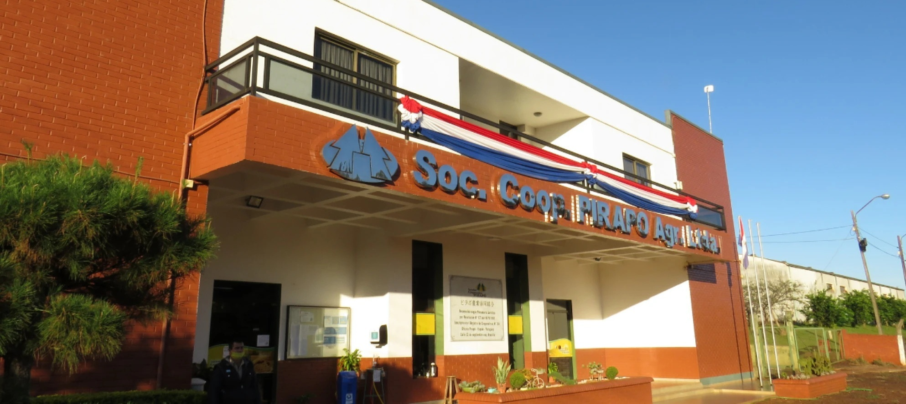

La Cooperativa Pirapó ofrece los siguientes servicios para sus socios y la comunidad:
Oficina Central

Dentro de la Oficina Central se encuentran los departamentos de Gerencia, Secretaría, Contabilidad, Tesorería, Comercial, Informática y Recursos Humanos.
Los socios acceden a servicios de:
Cuenta Corrientes y Caja de Ahorros
Créditos para producción, inversiones como adquisiciones de Maquinarias Agrícolas y de Terrenos, mejoramiento de suelos (Cal Agrícola) y Créditos Especiales.
Todo esto acorde a las Normativas del INCOOP y la SEPRELAD.
Silos
Cuenta con dos silos que realizan el acopio de toda la producción de sus cooperadores.
Silo Centro
Ubicado en Pirapó Centro, cuenta con 7 pre-limpieza y 3 secaderos con capacidad estática total de 39.000 tn.
En él se recepcionan: Soja, Trigo, Maíz, Sorgo, Canola y Girasol.
Silo Km 13
Ubicado sobre la Ruta Py-06, Km 76. Cuenta con una capacidad estática total de 29.000 tn, con 3 pre-limpieza y 2 secaderos. Se recepcionan: Soja, Trigo y Maíz.
Asistencia Técnica
El sector de Asistencia Técnica fue creado en el año 2008, con el objetivo de brindar asesoramiento y apoyo a los socios en la producción agrícola. Los equipos técnicos capacitados acompañan a los socios productores desde la época de siembra hasta su cosecha.
También realizan múltiples actividades como:
Charlas de interés para los socios
Días de Campo
Parcelas Experimentales
Giras educativas
Competencia de alta productividad de soja
Servicios:
Corrección de suelo
Aplicación de Boro, Potasio
Medición de la curva de nivel
Insumos Agrícolas
Fue inaugurada la nueva oficina el 01 de diciembre del 2020.
Este departamento, en conjunto con profesionales de asistencia técnica y semillería ofrecen asesoramiento a los socios productores.
Se encargan en proveer insecticidas, fungicidas, adherentes, herbicidas, fertilizantes y semillas.
Cuenta con depósitos amplios, organizado con rack y pallet, para poder suministrar de manera fluida los insumos a los productores socios.
Semillería
Inspirados en la sustentabilidad y con un gran enfoque en la productividad distribuye, variedades de semillas certificadas de soja, maíz, trigo, sorgo y otros cultivos que cumplen con los estándares legales de producción.
Cuenta con depósitos aptos para la preservación de las condiciones originales de las semillas, además de cámaras frías para el almacenamiento de aquellas que requieran condiciones ambientales controladas, garantizando así la conservación de la calidad genética, física y fitosanitaria de las mismas.
Estación de Servicio
Estación de Servicios Centro: dispone a la venta combustibles, lubricantes variados, gas GLP y todo tipo de productos necesario en automotriz. También realiza servicio de cambio de aceite con mano de obra gratuita.
Estación de servicios Km 13: siendo una sucursal, se limita al suministro de combustibles, lubricantes, gas GLP y algunos productos necesarios en automotriz.
Supermercado
Productos orientales
Aderezos, condimentos, lamen, sake, snacks, soju y muchos más.
Ropería y Zapatería
Prendas y calzados con varias marcas reconocidas para damas, caballeros y niños/as.
Verdulería
Verduras frescas, el 40% de sus productos son proveídos por productores locales.
Carnicería
Carnes de excelente calidad con controles higiénicos, en alianza con productores locales.
Depósito al por mayor
Para los socios y clientes que realizan sus compras en volumen mayor.
En julio de 2005, se habilitó el supermercado más grande y completo del Distrito. Los clientes podrán encontrar diferentes productos desde canastas básicas, carnicerías, panificados, artículos orientales, roperías y mucho más al mejor precio de la zona.
Ferretería
En edificio compartido con el Supermercado, en el 2005, se reinauguró la ferretería más grande y completa del Distrito, con un moderno salón de ventas y con los mejores controles de stock a través de códigos de barras.
Ofrece artículos de:
Ferretería en general
Repuestos para maquinarias agrícolas
Equipos de compresores
Soldaduras
Motosierras
Prensado de mangueras hidráulicas, etc.
Materiales de Construcción
Habilitado en junio de 2015, con el objetivo de suministrar a los socios y público en general los materiales de construcciones con una buena relación de calidad y precio.
Provee productos de las marcas más solicitadas del mercado, atendiendo a las necesidades de cada comprador. Ofreciendo a los suyos, la mejor atención posible.